С нуля до Альфа-удочки
Здесь не копают шахты: руду вылавливают из воды, а заводы работают, пока ты спишь. Ниже — весь путь по порядку: первый час, рыбалка, 13 тиров удочек, автоматизация, деньги, кейсы, квесты и события.
Первый час на плоту
Четыре шага, после которых ты уже ловишь медь и продаёшь её Коту.
-
2 минуты
Аккаунт на сайте
Ник, почта, пароль. Аккаунт держит прогресс, статистику улова, баланс и скин — прогресс не потеряется при переезде на другой компьютер.
-
5 минут
Лаунчер
Клиент сам скачает Forge 1.20.1, 69 модов, квесты и ресурспаки. Искать сборку по сайтам и настраивать моды не нужно.
-
30 секунд
Вход в один клик
Сервер подставляется из лаунчера — IP вводить не нужно. Заходишь и оказываешься на своём плоту посреди океана.
-
1 минута
Кит новичка
Команда
/kit start: бамбуковая удочка, множитель удачи, ящик снастей и 16 лестниц. Перезарядка — раз в сутки.
- Сделать 20 забросов и посмотреть, что падает с T1 — это твой первый ресурсный поток.
- Продать улов Коту-рыболову: он каждый день платит больше за три конкретные рыбы.
- Открыть меню F4 — там профиль, магазин, кейсы, баттл-пасс, наборы, аукцион и топы.
- Взять задание дня и проверить, нет ли над океаном Золотой бури — она усиливает редкий улов.
Рыбалка — твой инструмент
Заброс, мини-игра и пул ресурсов: сюда приходит всё, из чего строятся заводы.
Мини-игра на улове
Правая кнопка — и открывается окно с полоской: веди указатель в светлую зону, пока рыба не сдастся. Чем точнее держишь зону, тем целее снасть и быстрее улов.
Что падает на старте
Бамбуковая удочка тянет базовые ресурсы: камень, землю, глину, песок, медь и олово. Этого хватает на первую верстак-цепочку и следующую удочку.
Костяная и Небесная
Костяная (3 алмаза) ловит кости, паутину и снег — плюс дроп враждебных мобов обычного мира. Небесная ловит только рыбу, зато с лучшим шансом на редкие виды.
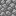
Булыжник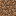
Земля Глина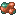
Медная руда Оловянная руда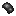
ЛатексЛестница удочек: T1 → T13
Каждая следующая удочка крафтится из предыдущей и её же улова. Пропустить тир нельзя — но и застревать не нужно.
От бамбуковой до Альфы: с каждым тиром в пул добавляются новые руды и сплавы Industrial Upgrade.
- T1
- T2
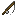
T3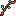
T4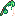
T5- T6
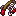
T7- T8
- T9
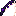
T10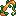
T11- T12
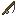
T13
Что открывает каждый тир
- T1 «Бамбуковая» — камень, земля, глина, песок, гравий, нить, саженцы, латекс, торф, медь, олово.
- T2–T4 — железо, уголь, титан, шпинель, серебро, сапфиры: открывается металлургия Industrial Upgrade.
- T5 «Слизневая» — первый обсидиан: ставишь портал в Ад прямо на плоту.
- T6–T9 — платина, кристаллы, аметист, редкие сплавы и материалы Botania.
- T10–T11 — обсидиан пачками, светящиеся ресурсы, компоненты AE2.
- T12 «Магматическая» — первый иридий и жаропрочные сплавы.
- T13 «Альфа» — иридий, осмий, полоний, осмиридий, адамантиевая руда и звезда Незера (шанс 20%).
Как не застрять на переходе между тирами
- Рецепт следующей удочки требует улов предыдущей — держи 1–2 лишних «промежуточных» стака.
- Лишнее продавай Коту и на аукционе: монеты нужны на кейсы, а кейсы дают редкие материалы быстрее, чем ручной лов.
- Костяная удочка выручает, когда нужен лут с мобов, а не из воды: паутина, кости, порох.
Заводы работают без тебя
Семь машин закрывают весь цикл: от ловли и добычи со дна до переработки редких материалов. Лимит — по 10 машин каждого типа на регион.
Авторыболов MK-2
Ловит сам, пока ты строишь: складывает улов в сундук рядом.
Океанический экскаватор
Грызёт морское дно: руды и песок без ныряния.
Экстрактор
Вытягивает ресурсы из того, что другие машины принесли.
Синтезатор
Собирает редкие компоненты из простых материалов.
Центрифуга
Разделяет материалы: побочные продукты и пыль для сплавов.
Сборщик цветов
Ловит случайные цветы из воздуха — топливо для Botania.
Мана-фабрикатор
Переводит энергию FE в ману: магическим машинам не нужны цветы.
Деньги: монеты, гемы, аукцион
Всё заработанное идёт в кейсы, магазин и обмен между игроками.
Суточный спрос ×2
Каждый день Кот платит больше за три конкретные рыбы: ×2, ×1.75 и ×1.5. Список — на главной и в F4, курс меняется в полночь.
/ah sell <цена>
Выставляй предметы другим игрокам: доставка и перевод монет автоматические, комиссия берётся с продажи.
Премиальная валюта
Идут за события, награды баттл-пасса и задания — на них берут косметику и ускорения.
Кейсы с гарантом и 426 заданий
Кейсы — быстрый путь к редким материалам, задания — ровный доход и понятная цель.
Гарант: у каждого кейса свой счётчик
Открытия считаются по каждому кейсу отдельно, и в окне кейса видно, сколько осталось до гарантированной награды. Счётчик сбрасывается после срабатывания.
- Кейсы I–III (от 2 500 монет) — гарант каждые 12 открытий.
- Кейсы IV–V (150 000 и 450 000) — гарант каждые 20 открытий.
- Кейсы VI–X (от 1.2 млн) — гарант каждые 200 открытий: защита от затяжной неудачи на топовых солнечных панелях.
Лестница кейсов: от «Первопроходца» до «Бесконечности»
- I Первопроходец · 2 500 — алмазы, сетчатый фильтр, монеты.
- II Плавильня · 10 000 — контроллер и корпуса плавильни.
- III Паровая энергия · 45 000 — базовые корпуса машин и оверклокеры.
- IV Ботаническая флора · 150 000 — руны Botania, продвинутые корпуса.
- V Цифровая МЭ-сеть · 450 000 — прессы, диски и террасталь AE2.
- VI Глубины и радиация · 1.2 млн — тир-6 солнечная панель, эссенция Гайи.
- VII Сверхпроводники · 2.5 млн — тир-7 панели, лапотронные кристаллы.
- VIII Матрица сингулярности · 4.5 млн — тир-8 панель, матричные слитки.
- IX Дракониевое слияние · 6.5 млн — тир-9 панель, пробуждённые ядра.
- X Абсолютная бесконечность · 8 млн — тир-10 панель и слиток Бесконечности.
Квесты FTB: пар → электричество → ботаника → AE2 → Avaritia
426 заданий объясняют каждый шаг и платят за него монетами, гемами и предметами. Книга квестов лежит в F4 или выдаётся гайд-буком.
- Пар — первые механизмы и топливо, чтобы завод начал крутиться.
- Электричество — генераторы, кабели, батареи, первые автоматические линии.
- Ботания и Alex's Caves — магия, ресурсы из глубин, нестандартные материалы.
- AE2 — цифровое хранилище и авто-крафт: завод начинает собирать себя сам.
- Avaritia и эндгейм — сингулярности, бесконечные слитки, финальные цели.
События: лови момент
Постоянная механика — окна, которые дают больше монет и редкого улова за то же время.
20 минут каждые 3 часа
Во время окна каждый улов имеет шанс 5% поймать золотую рыбу, а джекпот доходит до 2 500 монет. Объявление приходит в чат.
Редкий улов +65%
Грозовой фронт над океаном усиливает шанс на редкие ресурсы и поднимает цену рыбы у Кота: буст ×1.6 на время шторма.
Призы 2500 / 1000 / 500
По выходным проходит турнир по самой тяжёлой рыбе. Итоги — на странице топов, награды приходят автоматически.
Частые вопросы
Коротко о том, что спрашивают в первый день.
Сервер лагает — что проверить в первую очередь
Сборка уже включает Embeddium, FerriteCore, EntityCulling и Dynamic FPS. Если кадры проседают: отключи шейдеры в Oculus, уменьши дальность прорисовки и проверь, не стоят ли рядом десятки автоматических линий. Что мы делаем на своей стороне — на странице «Против лагов».
Как играть без лаунчера
Можно, но придётся вручную собрать Forge 1.20.1 и все 69 модов нужных версий. Лаунчер делает это сам и держит сборку в актуальном состоянии — с ним обновления приходят автоматически.
Где взять бесплатные ключи от кейсов
Ежедневная награда за вход (со стриком), награды баттл-пасса, задания FTB и события. Ключи копятся во вкладке «Кейсы» в F4 — открытие ключом бесплатное.
Как сменить скин, плащ или ник
Скин и плащ меняются в личном кабинете на сайте — применяются в игре после следующего входа. Ник меняется там же (смена ника входит в привилегии выше «Капитана»).
Обязательно ли проходить квесты
Нет. Но за 426 заданий платят монетами, гемами и редкими предметами, а ветка квестов подсказывает порядок шагов, если не знаешь, что строить дальше.
Как связать Telegram или Discord
В профиле на сайте есть раздел привязки: получаешь код и отправляешь его боту. После этого приходят уведомления о продажах, событиях и ответах администрации.
Нашёл баг или читера — куда писать
В Discord или Telegram сервера, с ником и описанием. Если есть скриншот или запись — приложи: так разбор быстрее. Правила и наказания — на странице «Правила».
Где смотреть точные шансы и таблицы лута
Страница «Удочки и лут»: по каждому тиру расписаны пулы, шансы и количество. Состав кейсов — на странице «Кейсы».
Готов к первому забросу?
Лаунчер поставит сборку сам, а кит новичка ждёт на плоте. Дальше — только ловить и строить.